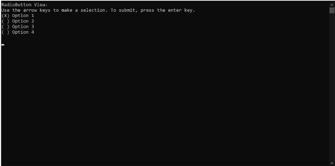
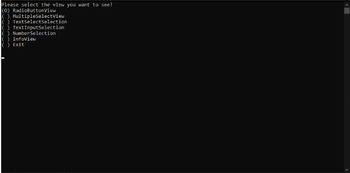
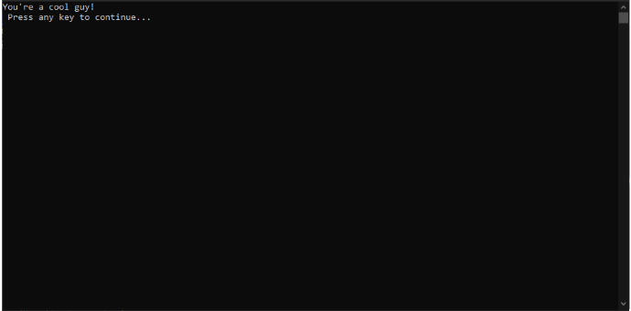
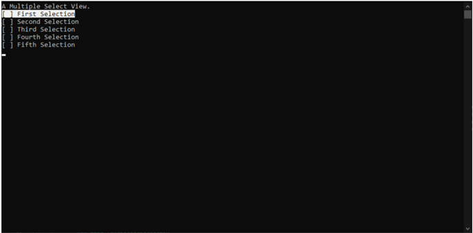
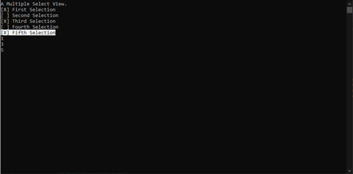
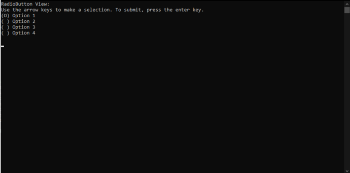
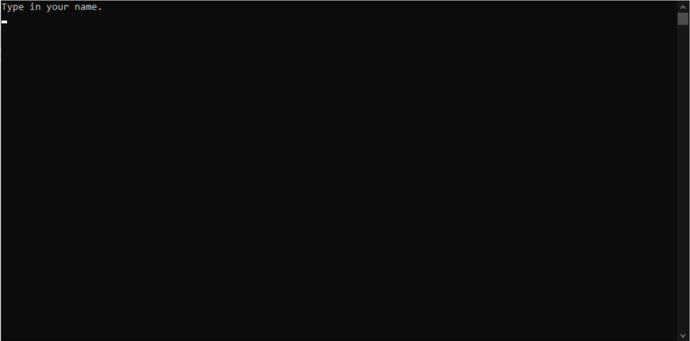
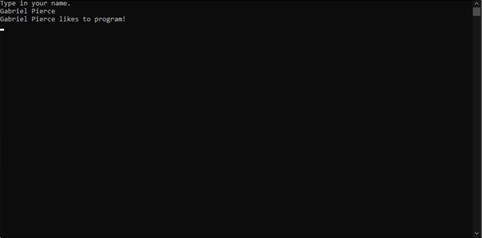
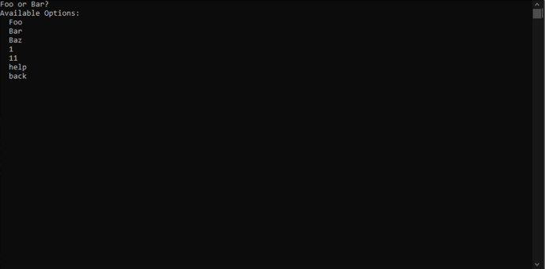

Better Console UI
Class library that offers intuitive navigation through your console application.
I developed a class library that allows easy navigation through your console application dialog. Utilizing keyboard input such as arrow keys, the space bar, the enter key and a custom made fuzzy search engine.
Parts of a View
The class library consists mainly of views and their respective components. A view is like a page on a website. Only one view can be displayed at a time. A view mainly consists of:- A Header
- A Input
- A PreviousView
- A Display() Method
- A SwitchTo() Method
- An Update() Method
- RevokeControl() Method
Header
A header is a prompt to the user on what to do next, or a clarifying statement about the options displayed in the Input.
Input
An input is the kind of input the user can use to provide their desired choice to the view.
Example

Here the header of the view is
RadioButton View:
And the input of the view is the RadioButton input method. With four options.
Use the arrow keys to make a selection. To submit, press the enter key.
(X) Option 1
( ) Option 2
( ) Option 3
( ) Option 4
Customizing Inputs
When developing this class library I thought it best to allow the user to choose the way the views display their inputs.
Most inputs have a static class for their respective settings. The naming convention is <input method>Settings. It lies within the BetterConsoleUI.Common.Settings namespace.
Here is an example.
RadioButtonSettings.Selected = "(O)";
RadioButtonView rbView = new RadioButtonView("RadioButton View:\nUse the arrow keys to make a selection. To submit, press the enter key.");

Previous View
The PreviousView field on a View is pretty self explanatory. The PreviousView is the last view that the user saw before this one. (Excluding any backward navigation)
Display(IView? previousView = null, IView? sender = null) Method
The display method is used to force the view to be displayed within the console. Whenever a view is being displayed, its input needs to have control of the Console window so that it can capture the user’s inputs. But when we switch the views we need to be sure that the control of the Console Window has been revoked from the previous view, and whatever other view is sending the user to that view.
secondView.Display(firstView) will set the PreviousView field on secondView to be firstView. And ensure that the control of the console has been removed from firstView and given to the secondView.
You can navigate backwards from any view. Let’s say that we were just looking at thirdView, but now we want to go back to the second view. But I want to set the secondView’s PreviousView to be the firstView. Here is an example of this using the Display() method.
// Displays the secondView, revoking control from firstView and thirdView and sets secondView.PreviousView to be firstView.
secondView.Display(firstView, thirdView);
GoBack() Method
GoBack() is an easy way to safely return to the previous page.
thirdView.GoBack() will display the secondView. secondView.GoBack() will display the firstView. etc.
SwitchTo(View view) Method
firstView.SwitchTo(secondView) displays the secondView, setting firstView as secondView's PreviousView.
Update() Method
The Update() method updates the view currently being displayed. For instance, if you are looking at firstView and in your code you changed the firstView's Header to be something new. And you want to display that new header to the user. You would call the firstView.Update() method. Every time the Input is manipulated the Update() method is called.
RevokeControl() Method
RevokeControl() removes the control from the view you called it on. Let's you would like to provide the user with an option to end the application. A good way to do this is calling RevokeControl() on the view you are currently on.
Different Views
Currently, there are six different custom views that you can select from.- InfoView
- MultipleSelectView
- NumberInputView
- RadioButtonView
- TextInputView
- TextSelectView
InfoView
The info view contains a AnyKeyToContinue input method. The header gets printed to the console. And then the AnyKeyToContinue input method awaits some key press. If the key pressed is the back arrow. It will return to the previous view. Otherwise it will invoke the method provided.
InfoView infoView = new InfoView("You're a cool guy!");
infoView.MethodToInvoke = () => { infoView.SwitchTo(firstView); };
infoView.Display();

MultipleSelectView
The MultipleSelectView contains a MultipleSelect input method. You provide the MultipleSelectView with a List<MultipleSelectSelection>. Each MultipleSelectSelections contains:- Text to display
- MethodToInvoke when the MultipleSelect input method is submitted and the MultipleSelectSelection is Selected.
- IsSelected boolean indicating whether the selection is currently selected.
- IsHighlighted boolean indicating whether the selection is currently highlighted by the user
- UpArrow
- Highlights the previous MultipleSelectSelection.
- DownArrow
- Highlights the next MultipleSelectSelection.
- LeftArrow
- Displays the previous view.
- RightArrow or SpaceBar
- Select the highlighted MultipleSelectSelection.
- Enter
- Submits all of the selected MultipleSelectSelections invoking their MethodToInvoke.
MultipleSelectView msView = new MultipleSelectView("A Multiple Select View.");
var msViewSelections =
new List
{
new MultipleSelectSelection() {Text = "First Selection", MethodToInvoke = () => { Console.WriteLine("1"); } },
new MultipleSelectSelection() {Text = "Second Selection", MethodToInvoke = () => { Console.WriteLine("2"); } },
new MultipleSelectSelection() {Text = "Third Selection", MethodToInvoke = () => { Console.WriteLine("3"); } },
new MultipleSelectSelection() {Text = "Fourth Selection", MethodToInvoke = () => { Console.WriteLine("4"); } },
new MultipleSelectSelection() {Text = "Fifth Selection", MethodToInvoke = () => { Console.WriteLine("5"); } },
};
msView.Selections = msViewSelections;
msView.Display();
 
NumberInputView
The NumberInputView contains a NumberInput input method. It enables the user to select a number between the minimumNumber provided and the maximumNumber provided.
NumberInputView nsView = new NumberInputView("Select a number between 1 and 5.", minNumber: 1, maxNumber: 5);
nsView.MethodToInvoke = (int x) =>
{
// SomeMethod(x);
};
nsView.Display();
To control the NumberInput input method, you use the up and down arrow keys to select the number, enter to submit the selected number (and pass it to its MethodToInvoke Action
RadioButtonView
The RadioButtonView uses the RadioButton input method. It allows the user to select one option from options provided.
The selections are represented by aList a RadioButtonSelection consists of:
-
Text
- The text to display to the user.
-
MethodToInvoke
- The method to invoke if this selection is submitted.
-
IsSelected
- A boolean indicating whether this selection is currently selected or not.
Here is an example:
RadioButtonView rbView = new RadioButtonView("RadioButton View:\nUse the arrow keys to make a selection. To submit, press the enter key.");
var rbViewSelections =
new List<RadioButtonSelection>
{
new RadioButtonSelection() {Text = "Option 1", MethodToInvoke= () => { Console.WriteLine("Press the left_arrow to navigate back a page!"); }},
new RadioButtonSelection() {Text = "Option 2", MethodToInvoke= () => { Console.WriteLine("Press the left_arrow to navigate back a page!"); }},
new RadioButtonSelection() {Text = "Option 3", MethodToInvoke= () => { Console.WriteLine("Press the left_arrow to navigate back a page!"); }},
new RadioButtonSelection() {Text = "Option 4", MethodToInvoke= () => { Console.WriteLine("Press the left_arrow to navigate back a page!"); }},
};
rbView.Selections = rbViewSelections;
TextInputView
The text input view is a view that takes in user input and passes that input into an Action<string>. It uses the TextInput input method.

TextInputView tiView = new TextInputView("Type in your name.");
tiView.MethodToInvoke = (string s) => { LikesToProgram(s); };
tiView.Display();
public static void LikesToProgram(string name)
{
Console.WriteLine($"{name} likes to program!");
}

TextSelectView
The TextSelectView is a view that enables the user to select one option among many. The selections are represented by a List<TextSelectSelection>. A TextSelectSelection object consists of.-
Text
- The text to match against the user's input.
-
MethodToInvoke
- The method to invoke if the user's input matches.
The TextSelectView uses the TextSelect input method.
